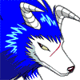

| Genki is pretty much the main character of the show. He’s adventurous brave and has a strong heart and soul. He is the Monster Rancher video game champ in the real world and the monster rancher world’s only hope of survival against Moo. Without him the story would not exist and the monster rancher world would be doomed. |
| Holly is the other human in the show. She poses a magic stone that only a few can use. With it, she can track down mystery disks and the disk that the Phoenix is locked in. She’s not a great fighter, but she’s a key member of the team. |
| Mocchi was the first monster that Genki unlocked. This little pink monster is Genki’s best friend. His name is Mocchi because his appearance reminds Genki of the snacks that are served back home. Mocchi has many attacks like the “cherry blossom blizzard” or "Mocchi Cannon". Together, Mocchi and Genki make an unstoppable team. |
| Golem is a rock monster that doesn’t really like to fight. He enjoys the peaceful life. During battles he usually stays behind to defend Holly and protect others. He is really strong but has a fear of water. |
|  | Tiger of the Wind is one of the most powerful monsters alive. He used to be the leader of a wolf pack until Moo's forces destroyed them all. He seeks revenge at Moo for converting his brother, Grey Wolf, into a member of the Big Bad Four. He has very powerful attacks. His name strikes fear into the hearts of many people, but he is really a good guy. He usually ends up saving the team from danger. Tiger and Hare don't always get along though. |
| Hare is a tricky, calculating monster. He likes to trick people into giving him money. He has some good attacks and makes up almost all the plans for the group. |
| Suezo is Holly’s best friend. They’ve been friends since they were little. Suezo can see very far, and with help from Golem, he usually finds whatever they are looking for. Suezo also has a teleporting attack that doesn’t always work. |